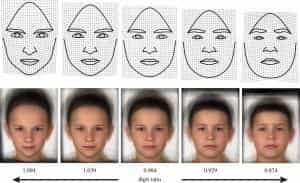
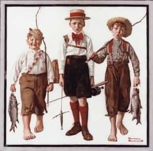

Michael is the author of Staying Married in a Degenerate Age. Follow him on Twitter or Facebook. You can read more of his writing at Honor and Daring.


There are a lot of articles in the manosphere that discuss what it means to be a man. Some think that it means learning game. Others think that it means making gobs of money, developing a muscular body, becoming a martial arts badass, or hunting.
All of these are very good—and they are things we should all be working on. But what really made a difference for me was becoming a father with the birth of my son two years ago. Here are some of the things that being a father to a boy has taught me.
My son was born a few weeks early, just after I had started a new job that had an hour and half commute. The timing couldn’t have been worse. I didn’t have any vacation or sick time so I went back to work a day after he was born. I was exhausted.
Newborns wake up every two or three hours to be fed. Even if your wife is breast-feeding, you are going to end up waking up too. My wife and I are both rational people but the sleep deprivation really had a bad effect on us. We started to overreact and have arguments over the silliest things.
Things only calmed down once we figured out a schedule where we took turns and allowed opportunities for naps. If you are not a parent yet, this is golden advice. Learn to sleep whenever you can. It will save your marriage.

First, I need to tell you a little bit about my son. The picture above shows boys faces based on the amount of testosterone that the baby received in the womb. The picture on the left depicts the more feminine face of a boy who received less testosterone while the picture on the right is of a boy who received a lot.
About a year ago I sent this picture to my wife and we had a good laugh because our son most resembles the picture on the far right. We’ve nicknamed our son “Brawny” because he is a stereotypical boy. He likes tools, cars, trucks, chainsaws, swords, and guns.
We have not consciously encouraged any of this behavior. It just happened. The whole male-female binary thing is real. It is not a cultural construct.
Probably the biggest thing I’ve noticed is that my kid could stay outside all day. It doesn’t matter how cold or hot it is. He’ll even stay out in the pouring rain if we let him. While he is outside, he can amuse himself for hours by throwing things, digging, jumping, and climbing.
When he is inside, though, he is less likely to play by himself even though he has plenty of toys. When he is inside, he needs more one-on-one attention.
My son’s love of the outdoors made me realize why so many boys end up being diagnosed with attention deficit disorder. Our feminized public school system, where even recess and PE are frequently eliminated, is not conducive to the education of boys. If we don’t end up homeschooling, we’ll probably put our son in an all-boys school.

When I was growing up, the path was pretty clear. Get into a good college, get good grades, and find a job. We could take the security and stability of the country for granted.
Times have changed. We live in a feminized society that treats boys as if they were defective girls. Anything masculine is frowned upon. There is even evidence that men are less masculine than they have been in the past. Studies have shown that men’s testosterone levels are down 20% since the 1980s.
Now, the future of the United States is no longer so clear. The US has never recovered the jobs that it lost after the 2007 financial meltdown. The jobs that were created are either lower paying or they are part of the fracking boom.
Unchecked immigration has made it difficult assimilate new arrivals. This has weakened the commonalities that bind us together as a people. Meanwhile, racial tensions have been fanned to a fever pitch to benefit certain political groups. It’s not hard to imagine that the US might begin to break apart in the coming decades.
It is no better in Europe. Large-scale immigration from Islamic countries combined with the Europeans unwillingness to be bothered with reproducing cannot have a happy ending.
For these reasons, I have to prepare my son for a variety of possible futures:
#LoveWins
If society breaks down, the skills that our sons will need will include survival skills and proficiency at self-defense and firearms. They’ll also need to know how to rebuild civilization so leadership, farming, military tactics, and engineering will all come in handy.
The more likely future is a complete takeover of society by the SJWs. This will result in a police state where the necessary skills will be proficiency at the Common Core and the ability to not let on that you are guilty of thought crime.
My current plans are to try to give my son a classical education. That is, I want him to read the Greek and Roman classics as well as their Christian successors. I want him to have at least one foreign language as well as Latin. I will train him to appreciate literature and poetry and not just parse New York Times articles.
Following the Latin phrase, mens sana in corpore sano, I will try to balance his intellectual development with physical activity such as fencing, martial arts, swimming, hunting and fishing, and any team sports that he may show interest in.
Before I got married, I worked hard, trained martial arts, dated women, read a lot, and traveled. Getting married didn’t change my life too much (apart from the dating women part), but having a kid did.
Since the birth of our son, I no longer do martial arts, I read a whole lot less, and my television watching is nearly non-existent. When I get home, I spend all my time with my son. I don’t regret it though because it has allowed me to witness so many “firsts” like his first steps. I’ve also developed a tight bond with my son that I would not be able to have otherwise.
I think the trend in our culture is for parents to try to “get back to normal” after having a child. What this means is getting back to doing what they did before they were parents. There is nothing wrong with enjoying yourself, but if it is taken to an extreme, the children become accessories.
I am not a big fan of Pope Francis, but he once told parents to “waste time with your children.” I think it is excellent advice.
I wish I had had children sooner because having a child has really given me incredible focus. Before having my son, I would go in cycles. Sometimes I would work really hard and make great strides, but there were also periods of coasting where I made no progress.
Since becoming a father, I have really started to focus on career in a good way. Now, oddly, I have become less risk averse and more entrepreneurial. I even notice that I have more concentration. There is some evidence that becoming a father actually makes men more intelligent, at least temporarily, so maybe that is the reason. Whatever the cause, I like my new business drive and focus.
Overall, becoming a father is the best thing I have ever done and I highly recommend it to every man. Don’t wait until you are “ready” as conditions will never be perfect to have a kid.
Read More: Two Movies That Showcase The Invisible Caring Father